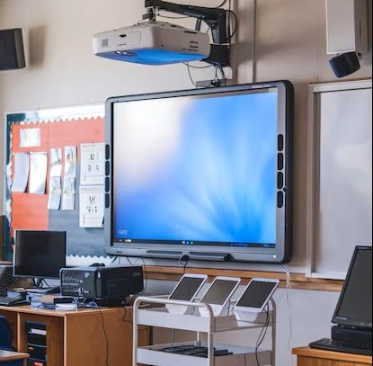

Use of Projectors

Business and Education
One of the numerous areas of use is education and business!
Projectors are used for presentation, demonstration, meetings and more.
They provide a useful way to share informtion like spreadsheets or slides.

Entertainment and Theater
One of the most common uses is entertainment. Many homes have a home theater,
or teenagers follow the trend of buying a small projector to display games or movies on their walls.
In theater, some productions also use projectors to create moving backgrounds.

Other Niche or Creative hobbies
There are many other enviornments where projectors are used.
To name a few: quilting, Murals, Food Design, simulations,
and even rug making!